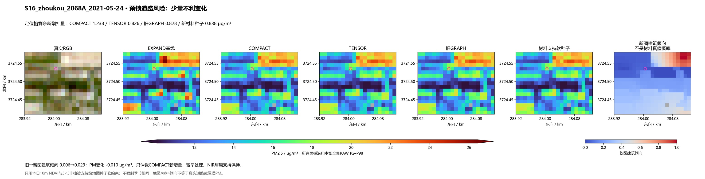
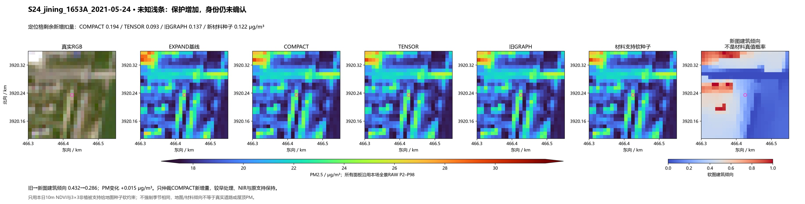
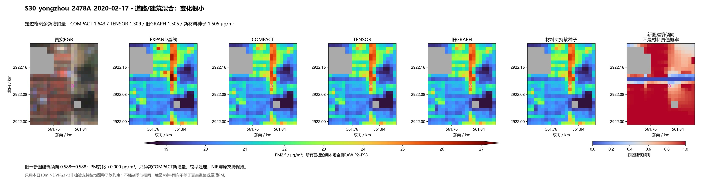
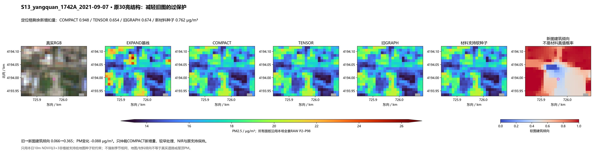
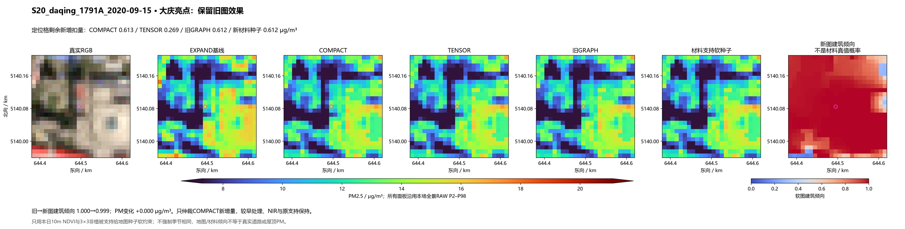
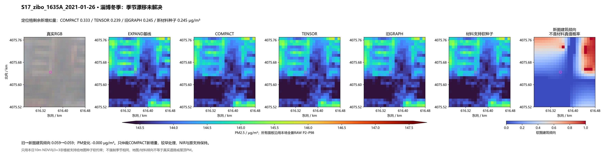
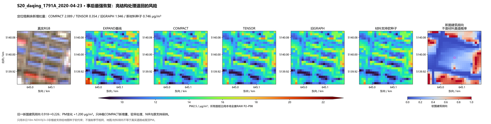
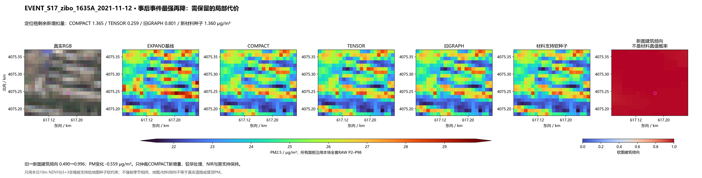

原156＋真实事件50，共206场，0拟合。原四带边权不变，以本日NDVI及3×3非植被支持减轻混合地图格的硬标签约束；只仲裁COMPACT新增扣量。六图运行前固定，末尾两图为事后极值风险诊断。每场各法同RAW色限、同原支持。
结果与局限 · 冻结机制 · 必要指标 · 固定输入概率读数
旧GRAPH剩余新增扣量 0.828 → 本日材料种子 0.838 μg/m³；实际PM变化 -0.010。

旧GRAPH剩余新增扣量 0.137 → 本日材料种子 0.122 μg/m³；实际PM变化 +0.015。

旧GRAPH剩余新增扣量 1.505 → 本日材料种子 1.505 μg/m³；实际PM变化 +0.000。

旧GRAPH剩余新增扣量 0.674 → 本日材料种子 0.762 μg/m³；实际PM变化 -0.088。

旧GRAPH剩余新增扣量 0.612 → 本日材料种子 0.612 μg/m³；实际PM变化 +0.000。

旧GRAPH剩余新增扣量 0.245 → 本日材料种子 0.245 μg/m³；实际PM变化 -0.000。

旧GRAPH剩余新增扣量 1.946 → 本日材料种子 0.746 μg/m³；实际PM变化 +1.200。

旧GRAPH剩余新增扣量 0.801 → 本日材料种子 1.360 μg/m³；实际PM变化 -0.559。
